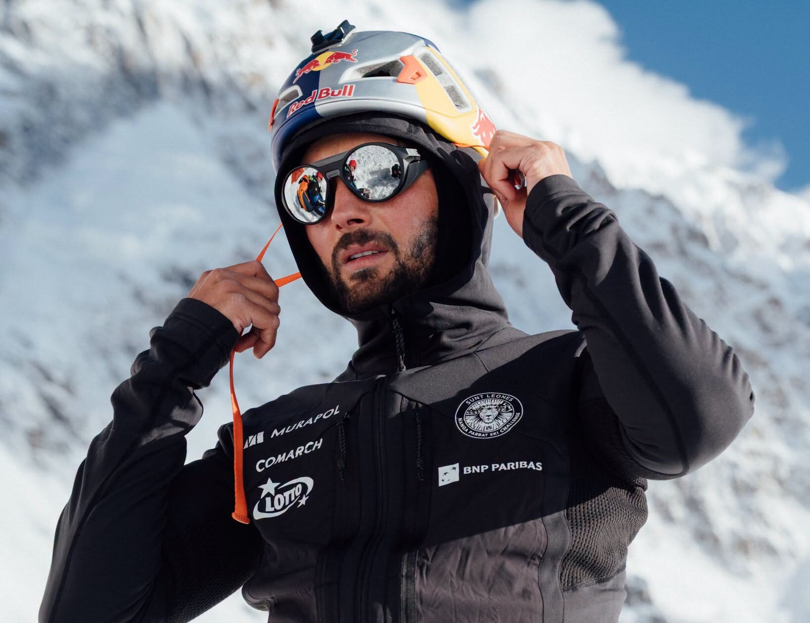

Andrzej Bargiel Ski Turun Nanga Parbat, Genapi Delapan Puncak 8.000 M Andrzej Bargiel Skis Down Nanga Parbat, Completes Eighth 8,000m Descent
Pendaki-ski ekstrem asal Polandia, Andrzej Bargiel, berhasil ski turun dari puncak Nanga Parbat (8.126 m) tanpa oksigen tambahan, melengkapi puncak 8.000 meter kedelapan yang pernah ia daki sekaligus ski turuni.
Polish extreme skier Andrzej Bargiel has skied down from the summit of 8,126m Nanga Parbat without supplemental oxygen, completing the eighth 8,000m peak he has both climbed and skied.
Baca SelengkapnyaRead More ↗